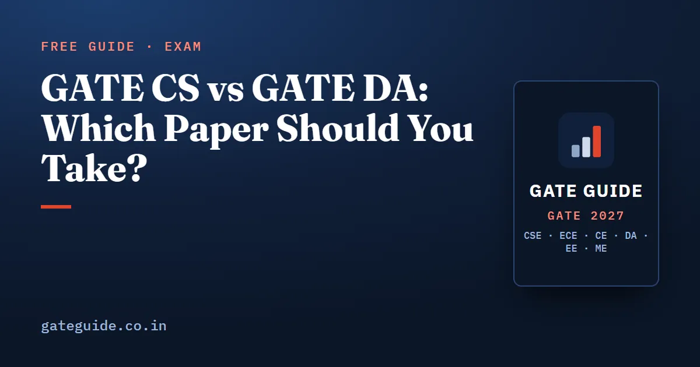

GATE CS vs GATE DA: Which Paper Should You Take?

CS and DA are two separate GATE papers with two separate syllabi, and a CS candidate is allowed to take DA as a second paper in 2027. That makes the question worth answering properly rather than by reputation. This guide sets the two official syllabi side by side, shows where they genuinely overlap and where they do not, and lays out what the two-paper option actually costs.
In this guide
Key takeaways
- Both papers run the same format: 3 hours, 65 questions, 100 marks, with General Aptitude worth 15 marks.
- CS carries a paper-specific Engineering Mathematics allocation of 13 marks inside its 85 subject marks. DA does not have that separate allocation.
- The official CS syllabus names programming in C; the official DA syllabus names programming in Python.
- Real overlap exists in linear algebra, probability, basic data structures and algorithms, and the relational database core. The rest of each paper is its own.
- DA is on the official list of second papers allowed with CS, and a second paper doubles the application fee.
The format is the same; the content is not
Every GATE 2027 test paper has 65 questions for 100 marks, of which 10 questions carrying 15 marks are General Aptitude. The difference sits in how the remaining 85 marks are described.
| CS | DA | |
|---|---|---|
| Duration | 3 hours | 3 hours |
| Questions and marks | 65 questions, 100 marks | 65 questions, 100 marks |
| General Aptitude | 15 marks | 15 marks |
| Subject component | 85 marks, of which 13 are Engineering Mathematics | 85 marks |
| Question types | MCQ, MSQ, NAT | MCQ, MSQ, NAT |
The brochure groups CS with the papers whose subject marks include a separately stated 13-mark Engineering Mathematics component. DA is grouped with the papers where General Aptitude carries 15 marks and the other 85 are simply subject marks — its mathematics lives inside the named sections rather than in a labelled block. The full marking and negative-marking rules are in the GATE CSE 2027 exam pattern and marking scheme.
The two syllabi, section by section
These are the sections of each paper as the official GATE 2027 syllabus sets them out. The last DA row is described by its contents rather than by its short heading.
| CS sections | DA sections |
|---|---|
| Engineering Mathematics (discrete mathematics, linear algebra, calculus, probability and statistics) | Probability and Statistics |
| Digital Logic | Linear Algebra |
| Computer Organization and Architecture | Calculus and Optimization |
| Programming and Data Structures | Programming, Data Structures and Algorithms |
| Algorithms | Database Management and Warehousing |
| Theory of Computation | Machine Learning |
| Compiler Design | Search, logic and reasoning under uncertainty |
| Operating System | |
| Databases | |
| Computer Networks |
Ten sections against seven, and only three of the headings even look similar.
Where the overlap is real
Linear algebra. Both papers list matrices, systems of linear equations, eigenvalues and eigenvectors, and LU decomposition. DA goes further into vector spaces, projections, quadratic forms and singular value decomposition.
Probability. CS lists random variables, the standard distributions, mean, median, mode, standard deviation, conditional probability and Bayes theorem. DA covers all of that and then adds the inferential half — central limit theorem, confidence intervals, z-test, t-test and chi-squared test — which CS does not name at all.
Data structures and algorithms. Both papers name stacks, queues, linked lists, trees, hash tables, searching and sorting, and graph traversal and shortest paths. The depth is different. The DA syllabus names the elementary algorithms explicitly — linear and binary search, selection, bubble and insertion sort, mergesort and quicksort. The CS syllabus asks for asymptotic worst-case time and space complexity and the three design paradigms of greedy, dynamic programming and divide-and-conquer, plus minimum spanning trees.
Databases. Both list the ER model, relational algebra, tuple calculus, SQL, integrity constraints, normal forms, file organisation and indexing. CS adds transactions and concurrency control; DA instead adds data transformation, sampling, compression and warehouse modelling with schemas and concept hierarchies.
Where they diverge completely
Six CS sections have no DA counterpart at all: digital logic, computer organization and architecture, theory of computation, compiler design, operating systems, and computer networks. Between them these carry a very large part of the CS paper — GATE CSE subject-wise weightage shows just how much.
On the other side, DA has three areas with no CS counterpart: optimisation of functions of a single variable, the entire machine learning section (supervised methods from linear and logistic regression through support vector machines, decision trees and feed-forward neural networks, plus unsupervised clustering and principal component analysis), and a section on informed, uninformed and adversarial search, propositional and predicate logic, and reasoning under uncertainty.
And then the language. CS says programming in C; DA says programming in Python. This is not a detail. C questions in GATE CS are famously about pointers, arrays, recursion tracing and precise evaluation order — a style of question that Python simply does not support. C programming output questions in GATE CSE covers what that style actually looks like.
The two-paper option, honestly
GATE 2027 allows one or two test papers, and the official combination list permits a CS candidate to add one of DA, EC, GE, MA, ME, PH, RA or ST. So CS plus DA is allowed.
What it costs:
- Money. The fee for two papers is twice the single-paper fee. The exact amounts by category and window are in GATE 2027 registration, fee and eligibility.
- Time. The non-overlapping part of DA — machine learning, optimisation, statistical inference, warehousing, search and uncertainty — is a genuine syllabus, not a weekend of revision. Every hour there is an hour not spent on CS.
- Attention. Two papers mean two sessions on two dates, each demanding a fresh three hours.
The case for doing it is narrow but real: you already study machine learning and statistics seriously for another reason, and a DA score opens a specific programme or role you have actually checked. The case against is the common one — a diluted CS score helps nobody, and CS is the paper with the deepest queue of opportunities for a computer science graduate.
What the published numbers show, and what they do not
The official cut-off pages of each year's organising institute publish qualifying marks and candidate counts for every paper. DA has appeared in those tables since 2024.
| Year | CS qualifying (General) | CS appeared | DA qualifying (General) | DA appeared |
|---|---|---|---|---|
| 2024 | 27.6 | 1,23,967 | 37.1 | 39,210 |
| 2025 | 29.2 | 1,70,825 | 29.0 | 57,054 |
| 2026 | 30.0 | 2,11,020 | 26.4 | 69,242 |
Read this as history, not a forecast. Qualifying marks are computed from each year's own paper and cohort, so the three DA values moving downward while CS moved upward tells you about those specific papers, not about 2027. What the table does show reliably is scale: CS remains by far the larger paper. How the qualifying figure is derived is explained in GATE CSE qualifying marks and cutoffs.
How to decide
Answer these in order, and the choice usually makes itself.
- What is the score for? List the specific programmes or roles you want and check which paper each accepts. This settles most cases immediately.
- Which syllabus matches your degree? A computer science or information technology graduate has already studied most of the CS syllabus for four years. That head start is worth a great deal.
- Do you genuinely know statistics and machine learning? Not "have used a library" — the DA syllabus asks for the theory behind the methods.
- How many weeks do you actually have? If one paper is a stretch, two is not a plan.
Choose one paper and prepare it properly. If that paper is CS, the book analyses 27 years of GATE CS papers, ranks the top 100 concepts and backs them with 1,120 questions and 10 full mock tests built to the official pattern. If that paper is DA, the GATE DA 2027 book, on sale since 1 October 2026, counts all three GATE DA papers from 2024 to 2026 question by question across 614 pages, with 907 questions with worked solutions and 10 full mock tests, for ₹250.
GATE Guide is an independent site and is not affiliated with IIT Madras, IISc or GATE. Read both syllabi in full on the official website before you commit.
Frequently asked questions
What is the difference between GATE CS and GATE DA?
CS is the computer science and information technology paper, built on digital logic, computer organisation, programming in C, algorithms, theory of computation, compilers, operating systems, databases and networks. DA is the data science paper, built on probability and statistics, linear algebra, optimisation, programming in Python, databases and warehousing, and machine learning.
Can I write both GATE CS and GATE DA in 2027?
Yes. GATE 2027 allows one or two test papers, and DA is on the official list of second papers permitted with CS, along with EC, GE, MA, ME, PH, RA and ST. The application fee is twice that of a single paper, and each paper is written in its own session.
How much do the CS and DA syllabi overlap?
Partly. Linear algebra, probability, basic data structures and algorithms, and the relational database core appear in both official syllabi. Everything distinctive to each paper does not overlap - CS has digital logic, computer organisation, theory of computation, compilers, operating systems and networks; DA has optimisation, statistical inference, machine learning and reasoning under uncertainty.
Which programming language is used in GATE DA?
The official DA syllabus names programming in Python. The official CS syllabus names programming in C. That single line is one of the clearest practical differences between the two papers, because the question styles that follow from each language are quite different.
Does GATE DA have an Engineering Mathematics section like CS?
Not as a separately labelled allocation. The brochure puts CS in the group where 13 of the 85 subject marks are Engineering Mathematics. DA sits in a different group where General Aptitude carries 15 marks and the remaining 85 are subject marks, with mathematics appearing inside the named subject sections.
Is GATE DA easier than GATE CS?
Neither paper is officially easier. Both are 65 questions and 100 marks in three hours, and each year's qualifying marks are computed from that year's own paper and cohort. Published qualifying marks for the two papers have moved in different directions in different years, so choose on syllabus fit, not on a difficulty rumour.
Sources
- GATE 2027 official website (IIT Madras)
- GATE 2027 Information Brochure with full syllabi (official PDF)
- GATE 2027 test papers and syllabus (official)
- GATE 2027 two-paper combinations (official)
- GATE 2026 cut-off marks (IIT Guwahati, official)
- GATE 2025 cut-off marks (IIT Roorkee, official)
Dates, fees and the syllabus are set by the GATE 2027 organising institute and can change. Always confirm at gate2027.iitm.ac.in.